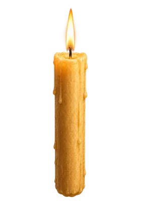
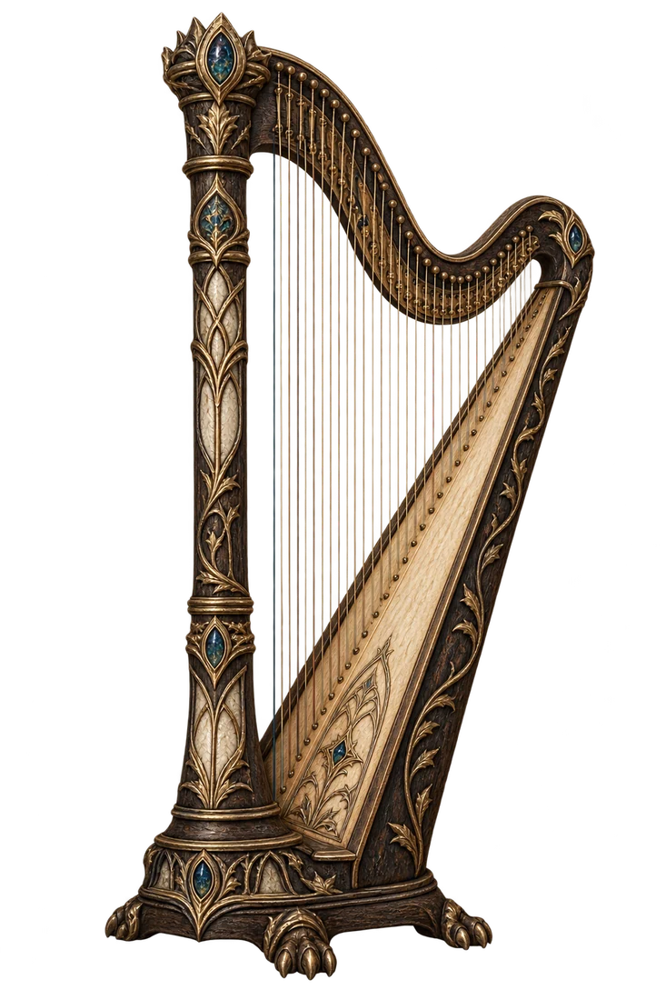

← Mapa hradu
Můj profil


Srdce Bradavic
Velká síň
Spustit kouzelnické šachy
Některá kouzla potřebují správný rytmus.
Kouzelnické šachy
Hra ve Velké síni · spusť partii tlačítkem níže
Kolejní pohár